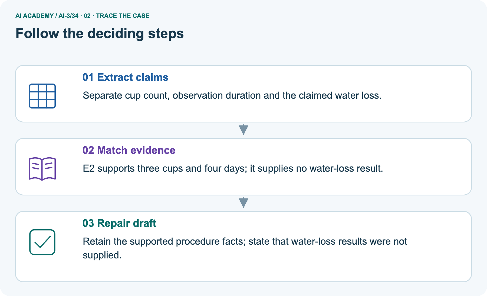
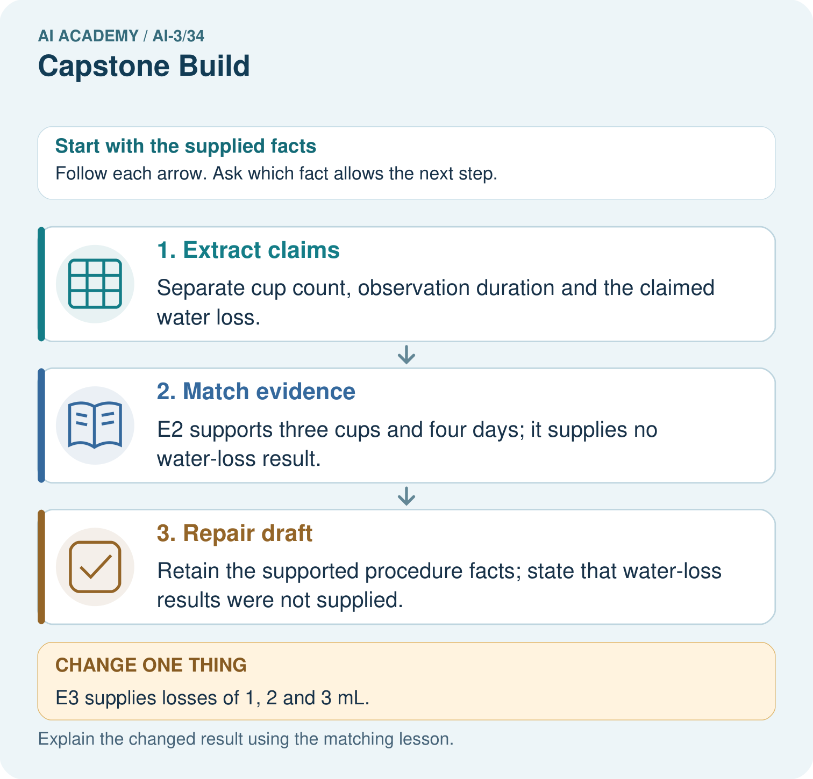
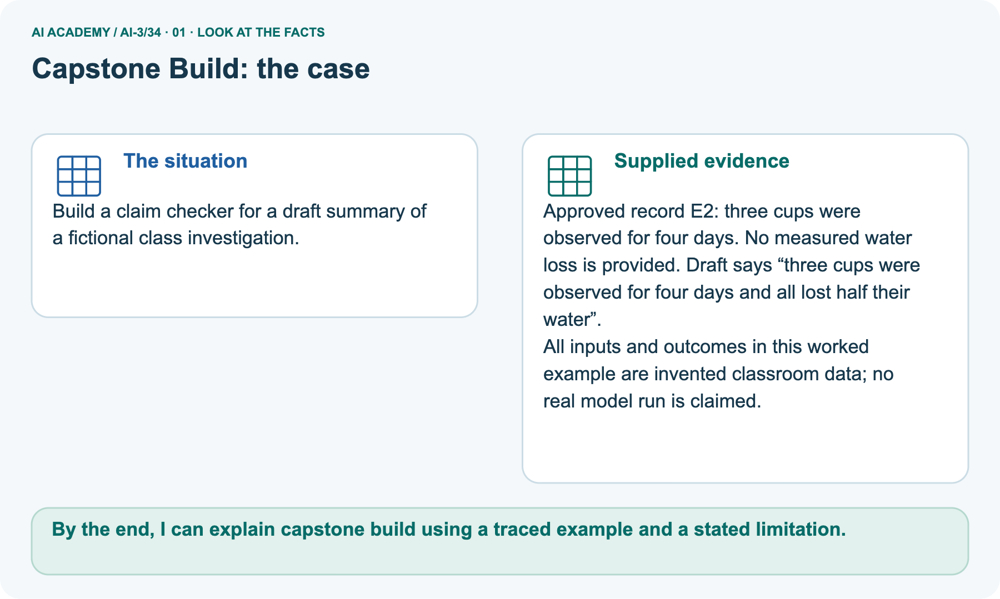
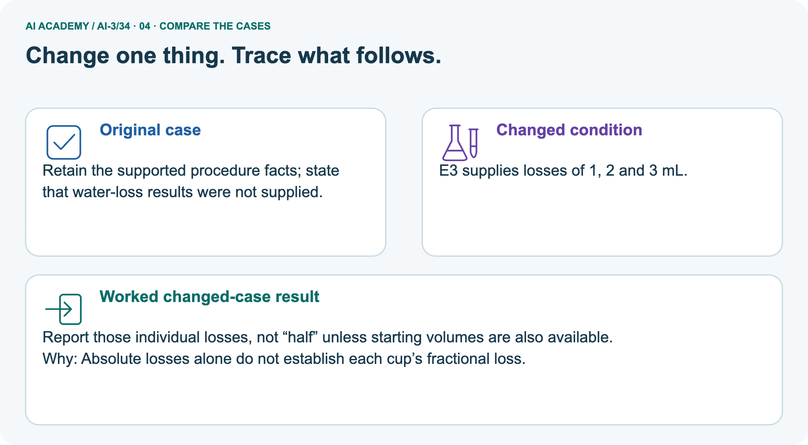
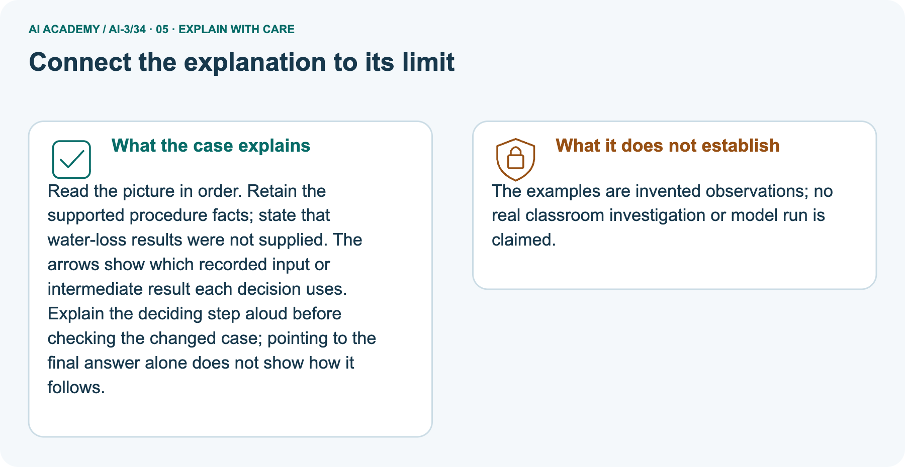
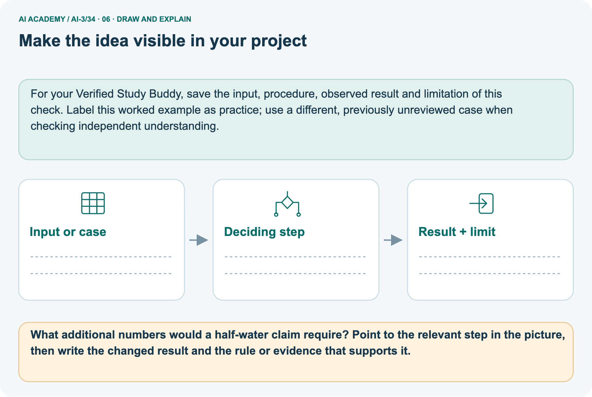

AI Academy · Level 3 · Grade 8 · Week 34 · Teacher guide
Capstone Build
Learn to understand, design, build, test and explain AI systems responsibly.
Project: Verified Study Buddy
THE CONNECTED WEEK
Teach traceable implementation and honest missing results.
Supply complete structured records, preserve run/trace differences and assess a fresh unsupported-outcome draft.
Keep one habit: Ask which requirement each component satisfies and which source values establish each displayed claim.
Main lesson · Section 1
Prepare this connected week
Use one main plan and keep practice separate from the independent first attempt.
Learning goal and precision
Primary target: Explain the mechanism and terminology of capstone grounded assistant
Two 45-minute sessions. Build the assistant as a sequence of testable stages: validate request, retrieve authorised evidence, decide answerability, draft, validate and return. Avoid merging all errors into one model score.
Use the supplied constructed scenarios to make the mechanism inspectable. Collect W4 before sharing solutions.
Students should name intermediate evidence and limitations; classroom pacing and learning effectiveness remain unvalidated.
By the end, I can explain capstone build using a traced example and a stated limitation.
What to prepare
Use the supplied scenario, student illustrations and blank paper. For numeric work, offer counters or a calculator after learners show the setup. Fictional records are supplied; personal data and paid accounts are unnecessary.
Case exposure check: this source example appears in ai-3/24, ai-3/34. Reuse a familiar case for recall or modelling; verify that the case used to assess transfer has not already received feedback.
Lesson and workbook; paper and pencil
Calculator and optional local Python 3 for arithmetic; no live API or private data
Prepare the fresh retry separately and withhold its solution until after collection
Main teaching plan
| Session | Sequence and minutes | Resources |
|---|---|---|
| Session 1 · Understand · 45 min | 0–7: recall and prerequisite; 7–15: inspect the concrete case and predict; 15–30: teacher models the worked trace; 30–40: learners explain a step using the text and visual; 40–45: check the core idea. | Sections 1–6; record the brief recall in the workbook. |
| Session 2 · Practise · 45 min | 0–5: retrieve the procedure; 5–15: W2 completion practice; 15–23: explain and check with a partner; 23–30: each learner answers the misconception check; 30–40: targeted reteaching or a harder variation; 40–45: prepare the investigation. | Sections 7–10; use the matching workbook W2 and misconception check. |
| Session 3 · Investigate and transfer · 45 min | 0–5: retrieve the decision rule; 5–20: investigate or trace; 20–30: start the independent case; 30–38: connect the project; 38–43: act on feedback; 43–45: plan the return check. | Use “Run the investigation”, “Connect your project”, “Show what you know”, “Study a complete case” and “Try a new case independently”. Give extra time for the full task set. If this week has a coding lab, use its named section; section numbers can change when extra explanations are included. |
This is a starting allocation of 135 minutes, not a validated duration. Preserve all named topics. Schedule extra time for connected examples, the full investigation, independent cases and project building.
Repeated copies of a case share one recorded attempt; they are not new evidence.
Opening retrieval and readiness
Without opening the old lesson, explain one key idea from Capstone Design. Give an example and a mistake that the idea helps you avoid.
Look for: Explain the mechanism and terminology of capstone requirements and corpus
Reference example, not the only acceptable wording: Teacher explanation: A grounded-assistant capstone begins with bounded requirements and a versioned permitted corpus.
A baseline can be a manual lookup process using the same evidence. Specify the user question, source authority, access, output/fallback contract and evaluation plan. Freeze corpus IDs and split cases before implementation.
Keep teacher material out of student retrieval.
Without opening the old lesson, explain one key idea from Safety Boundaries. Give an example and a mistake that the idea helps you avoid.
Look for: Explain the mechanism and terminology of untrusted input boundaries
Reference example, not the only acceptable wording: Teacher explanation: Untrusted input must be treated according to a contract before reaching code, queries or tools.
Data that resembles instructions does not acquire execution authority. For the toy lookup accept room IDs matching one uppercase letter plus one digit. Perform exact dictionary lookup; never evaluate user strings as code.
Reject invalid length or characters.
Without opening the old lesson, explain one key idea from Privacy by Design. Give an example and a mistake that the idea helps you avoid.
Look for: Explain the mechanism and terminology of data retention and deletion
Reference example, not the only acceptable wording: Teacher explanation: Retention and deletion cover all declared stores, including caches and logs. Removing a visible row may leave copies elsewhere.
Toy policy retains session content for 7 days and deletes it when age is at least7. Audit metadata may remain for 30 days without content. Track primary storage, cache and backup policy separately.
A result depends on the inputs, procedure and conditions that produced it. Preserve data roles and distinguish observed outcomes from predictions or unmeasured conditions.
If the prior concept cannot be explained, use a short retrieval activity before this chapter.
Earlier wording, alternatives and picture transcripts
Teach the learning cycle
Retrieval answer guidance
Capstone Design
Safety Boundaries
Privacy by Design
Use the student module and workbook section with this exact week title. The worked case, independent question and answers below form one aligned lesson sequence.
What the learner must demonstrate
A prototype cites note A but its answer adds a detail found nowhere in A. What should the final validation stage check and do?
Concept to explain
Implementation should preserve traceability from requirement to feature.
| Term | Meaning |
|---|---|
| traceability | The ability to connect a result back to its inputs, sources, steps and version. |
| integration | Connecting components so that they work together through agreed interfaces. |
| version control | A method for recording and comparing changes to identified versions of files. |
| minimum complete product | The smallest working version that fulfils its essential user task, including failure handling. |
Prepare the class
This compact option is not the full-week schedule. Use the main teaching cycle and allow extra sessions for the investigation, independent work and project.
Allow 80 minutes: recall 8; explanation 12; worked demonstration 15; guided practice 20; independent assessment 15; project and reflection 10. Extend the lab into a second session when needed.
Preparation for the connected explanation
Readiness answer
End goal for the pictorial case
This added worked case illustrates the week’s main idea. Retain all original and connected topics; schedule its practice within the teaching cycle.
Main lesson · Section 2
Teach source-preserving implementation and bounded tests
Separate procedure fields, measurement fields and unsupported generalisations.
Read the complete report contract
| Investigation-report contract | Declared behavior |
|---|---|
| Source E2 | Three fictional cups observed for four days; no water-loss measurements or initial volumes |
| Changed source E3 | Same three cups/four days, losses 1, 2, 3 mL; initial volumes still unavailable |
| Procedure claims | Retain cup count, duration and source ID |
| Measured outcome | Use only supplied losses; None means unavailable, not zero |
| Half-water claim | Needs each cup’s loss and corresponding positive initial volume; losses alone cannot establish the ratio |
| Universal claim | Neither toy record proves effectiveness for all conditions |
| Implementation limit | The program validates short structured records and builds a report; it is not a general natural-language fact checker or measurement-authenticity test |
Build the assistant as a sequence of testable stages: validate request, retrieve authorised evidence, decide answerability, draft, validate and return. Avoid merging all errors into one model score.
Review the earlier room-stage mismatch
A supported response requires current matching approval and register records. Any retrieval or validation failure gives needs_review with null claims. The classroom implementation performs no booking or external action.
Request room B; retrieved approval names B but register names C. Draft gives capacity 10 from C.
Same-room support fails before or during semantic validation. Return needs_review with null claims; the draft capacity is unsupported for B.
Read E2 and the unsupported draft
Build a claim checker for a draft summary of a fictional class investigation.
Approved record E2: three cups were observed for four days. No measured water loss is provided. Draft says “three cups were observed for four days and all lost half their water”.
All inputs and outcomes in this worked example are invented classroom data; no real model run is claimed.
Trace supported facts and missing results



Read the picture one step at a time
Read the picture in order. Retain the supported procedure facts; state that water-loss results were not supplied. The arrows show which recorded input or intermediate result each decision uses.
Explain the deciding step aloud before checking the changed case; pointing to the final answer alone does not show how it follows.
In the structured toy program, cups/days are positive integers; optional measurements are lists of nonnegative whole mL values, one per cup. Initial volumes, when supplied, must be positive whole mL and at least the corresponding losses. These deliberately narrow assumptions are not a general measurement schema. E2 produces procedure facts with unavailable losses/half status.
E3 adds 1, 2, 3 mL losses but half remains unknown without initial volumes. No program output proves the source record was reliably measured.
Predict E3 losses with missing initial volumes
Change: E3 supplies losses of 1, 2 and 3 mL.
Prediction: Report those individual losses, not “half” unless starting volumes are also available.
Reason: Absolute losses alone do not establish each cup’s fractional loss.
State invented-data and program limits
The examples are invented observations; no real classroom investigation or model run is claimed.
Cover the result. Ask learners to name the inputs and predict the next step. Uncover one step, connect the icon to the actual procedure, and explain its evidence. Then change the supplied condition and compare.
The picture is a representation; it does not document execution of a real AI model.
Earlier wording, alternatives and picture transcripts
Explain the mechanism
Input → Process → Output
Trace the information. At each stage, ask what changed and how you could test it.
Which stage could fail even when the other two are correct? Explain:
Predict first. Then check each step. A correct answer without visible reasoning is incomplete evidence.
1. Requirement R1: answer only from approved sources.
2. Feature: retriever plus source-bound prompt and citation field.
3. Test E4 checks missing evidence triggers abstention.
4. Build one complete path before adding optional interfaces or media.
Recalculate, retrace, or restate the reasoning in your own representation:
CHECK Did the evidence answer the exact question? Did the total, path, or source record stay consistent?
Concrete teaching case
A pipeline retrieves passages, drafts and displays without checking citations.
What step is missing?
Exact explanation to model
Validate every factual claim against its citation, plus required fields and boundaries. Revise or stop unsupported answers; retain diagnostic stages.
Explain the added worked example
Begin by writing the question the procedure is intended to answer. Identify the information already supplied, the information it will produce and the information still missing.
These are constructed classroom examples; they do not require live accounts, private records or an external service. Do not treat a plausible explanation as a measured outcome.
Before applying the procedure, write its units, denominator or decision boundary where relevant. A partner should be able to repeat each step using the same inputs.
If a required input is absent or violates the stated contract, record that condition explicitly instead of quietly replacing it with a convenient value.
Key terms
| Term | Meaning |
|---|---|
| Pipeline stage | One operation with defined inputs and failure handling |
| Answerability gate | A check for sufficient evidence before answering |
| Semantic validator | A check that claims match task evidence |
Model the reasoning aloud
Use the complete worked example below before asking learners to complete W2. Reveal a small part, invite a prediction, then explain the deciding step.
These teacher notes contain solutions; do not reveal the independent case answer during modelling.
Compare the intermediate evidence with the final statement. Explain why each number or decision follows from the stated inputs.
The conclusion belongs to this scenario and procedure; changing the inputs, evaluation population or authority can change what it establishes. Retain the raw record so a later revision can be compared honestly.
| Thinking move | Teacher prompt |
|---|---|
| Plan | What is given? What is the question? Which procedure fits these facts? |
| Do | Point to each input and intermediate step in the worked trace. Name the rule that allows the next step. |
| Check | Does the output answer the question? Which assumption or limitation prevents a larger claim? |
Use the diagram and verbal explanation together. Ask learners to match a sentence to a specific visual step; do not assign learners fixed visual or auditory learning styles.
A pictorial worked case: Capstone Build
The facts we will use



Why this result follows
What this example does not establish
Change one thing in the pictured case
Ask while showing the picture
Main lesson · Section 3
Guide the explanation, then remove help
Collect each learner’s reasoning before showing feedback.
Main completion prompt
Completion task: Request room B; retrieved approval names B but register names C. Draft gives capacity 10 from C. Show the intermediate steps and give the conclusion with its scope.
Expected reasoning and fading help
Teacher check: Teacher explanation: Same-room support fails before or during semantic validation. Return needs_review with null claims; the draft capacity is unsupported for B.
Start by identifying the given inputs together. Leave the intermediate steps blank. If needed, model one step, then withdraw that help on the next step. Move to a full trace only when the partial trace is understood.
For partners, alternate explainer and checker; collect a response from every learner before discussion.
Individual misconception check
Use the worked case for Capstone grounded assistant. Proposed explanation: “The worked result establishes every future case”. Decide whether this explanation is supported.
Point to the step or supplied fact that decides; explain your repair if needed.
Expected correction: A correct happy path does not establish fallback, access control or side-effect safety.
Collect explanations, not only yes/no votes. If a misunderstanding is common, re-model the relevant step for the class.
If it affects a few learners, give a short targeted group explanation while others solve a more demanding variation.
Pictorial question and changed-case reasoning
What additional numbers would a half-water claim require? Point to the relevant step in the picture, then write the changed result and the rule or evidence that supports it.
The starting volume for each cup and its measured loss. E3’s losses without starting volumes cannot establish a half fraction.
Changed-case check: Report those individual losses, not “half” unless starting volumes are also available. Absolute losses alone do not establish each cup’s fractional loss.
Changed-case reasoning: Report those individual losses, not “half” unless starting volumes are also available. Absolute losses alone do not establish each cup’s fractional loss.
Collect each learner’s explanation before discussion. Use the first missing connection between input, deciding step and result to choose support. This question is worked-case practice, not fresh mastery evidence.
Keep each learner explaining
Ask: Which facts are given, and which would we have to assume? Learners mark relevant details before discussing answers.
Say: Predict first. Show the rule, information path or calculation that would produce the result. A correct guess is not yet an explanation.
In pairs, one learner solves while the other checks evidence; exchange roles. Remove the worked answer before independent assessment.
Earlier wording, alternatives and picture transcripts
Demonstrate and guide practice
Board sequence
Write the given facts: A pipeline retrieves passages, drafts and displays without checking citations.
Write the question to explain: What step is missing?
Reveal after predictions: Validate every factual claim against its citation, plus required fields and boundaries. Revise or stop unsupported answers; retain diagnostic stages.
Use the earlier changed question as optional later practice. Reserve Repair the new seed-investigation draft independently for the first independent attempt before hints or feedback.
Classroom dialogue
Reveal reasoning one step at a time. Explain why a tempting alternative fails. Write units and denominators for arithmetic, trace conditions for decisions, and identify supporting sources for claims.
Model these guided questions
Guided: Same-room support fails before or during semantic validation. Return needs_review with null claims; the draft capacity is unsupported for B.
Qualification: A correct happy path does not establish fallback, access control or side-effect safety.
Exit: accept a concrete variation with its predicted outcome and a stated condition that would challenge the mechanism; reject a claim resting on unmeasured evidence.
Case-specific teaching sequence
| Stage | Teacher action |
|---|---|
| Session 1: 0–7 minutes | Retrieve the prerequisite; identify the input, procedure and evidence source. |
| 7–18 minutes | Explain section 1 and vocabulary. Complete W1 with a mechanism-based explanation. |
| 18–32 minutes | Trace the declared procedure and worked case. Complete W2, recording intermediate steps. |
| 32–45 minutes | Discuss the diagram with the worked input; use W3 to distinguish measured claims and limitations. |
| Session 2: 0–8 minutes | Retrieve the worked reasoning and collect the guided response before discussing it. |
| 8–20 minutes | Compare a proposed boundary variant with the original case; identify what remains fixed. |
| 20–35 minutes | Collect W4 independently. Require the procedure trace and the bounded conclusion. |
| 35–45 minutes | Use W5 and exit responses for feedback. Administer the fresh retry after feedback and preserve both attempts. |
Reduce help deliberately
Individual reasoning check
Pictorial practice question
Reasoned teacher answer
Main lesson · Section 4
Run the supplied investigation
Keep expected results, observed paper traces and remaining limits distinguishable.
Supplied materials and answer guidance
E2 preserves 3 cups/4 days, unknown losses and half status. E3 reports 1/2/3 mL losses but cannot infer half without initial volumes. Proposed E4 initial 2/4/6 would support half; E5 measured zero losses would not. R5 length mismatch rejects. Independent seed note supports 4 seeds/6 days only, not sprouting success or all-soil effectiveness. No actual experiment/model run is claimed.
Run and record
Predict → Test → Record → Explain
Keep expected and actual results separate. Surprises are useful data when recorded honestly.
Use the complete structured E2/E3 report builder and requirement-linked variants E4/E5/mismatched length. Connect validation, source-preserving output and claim review, recording run/trace status after integration changes. Do not turn absent measurements into zero or infer half-water ratios without initial volumes.
What did the hardest test teach you that the normal test did not?
Keep an inspectable record
| Record | What to capture |
|---|---|
| Input or evidence | Exact data, instruction or claim |
| Expected result | Answer or safe fallback declared before the run |
| Observed result | Actual result, including errors |
| Explanation | Rule, calculation or evidence explaining the outcome |
| Next test | One justified change and a new prediction |
Diagnose the first misunderstanding
The worked result establishes every future case: A correct happy path does not establish fallback, access control or side-effect safety.
A missing input may be replaced without recording the change: A replacement changes the evidence or contract. Record the change and its justification; do not silently turn unknown into a measured value.
Repeating an assessed case is new independent evidence: A replay checks consistency. An example used for feedback or revision cannot later be described as untouched final evaluation.
Choose support from the response
| What the response shows | Next teaching action |
|---|---|
| Missing or misread facts | Read the case aloud, mark supplied versus unknown facts, and let the learner restate it. |
| Wrong procedure | Return to the deciding step in the worked case. Contrast it with the proposed incorrect explanation. |
| Arithmetic or implementation error | Trace intermediate values or lines; preserve the first mismatch and retry that step. |
| Correct result without a reason | Ask for a trace and a changed case before marking independent understanding. |
| An unsupported wider claim | Ask which supplied evidence supports the claim and which further observation would be needed. |
Offer an oral explanation, drawing, enlarged visual or fewer examples when that removes a reading/writing barrier. Keep the same reasoning goal.
Stretch secure learners by changing a boundary or assumption and asking them to defend the effect, not simply by assigning more of the same questions.
Earlier wording, alternatives and picture transcripts
Run the weekly evidence lab
Words You Can Use to Reason
A definition matters when you can recognize the idea, use it, and contrast it with a near-miss.
Make the lab runnable
Use the supplied investigation for shared practice. Keep predictions and observed paper-trace results separate. Reserve Repair the new seed-investigation draft independently for the individual first attempt before feedback; do not use the reserved case as a paired lab task.
Diagnose and reteach
For guessing, return to given facts and request a trace. For vocabulary without application, use one example and one non-example. For arithmetic errors, check the setup before the calculation.
Finish with a different uncoached case before recording mastery.
Address these additional misconceptions
Match the support to the first error
Main lesson · Section 5
Assess the selected new case
Keep this key until after the first attempt; accept valid alternatives with defensible reasoning.
Selected independent question and key
Selected case: An experiment note records four fictional seeds observed for six days but supplies no growth results. A generated draft says all four sprouted and the method always works in any soil. Repair it.
Neither successful sprouting nor universal effectiveness is supported. Retain the four-seed, six-day procedure facts only, explicitly mark results unavailable, and check each claim against supplied evidence.
Judge explanation, trace and limits
| Dimension | Evidence required |
|---|---|
| Explanation | Names the applicable idea or procedure and ties it to the supplied facts. |
| Trace and result | Preserves the given inputs and shows the relevant intermediate steps; distinguishes a prediction from an observed execution. |
| Limits | States the assumptions, missing evidence or conditions under which the result would change. |
Record each dimension as not yet, with support, or independent. Accept a valid alternative procedure with a defensible trace.
Do not penalise an honestly recorded model failure if the learner correctly explains its evidence and limits.
Give one usable repair action
Name the earliest unsupported step and give one action to repair it. Have the learner make that repair now and explain why. Then assess the relevant skill on a fresh, fully specified case.
Confirm it was not previously practised with feedback; solve and check the new case before assigning it. A follow-up design prompt is a starting brief, not automatically an equivalent test.
W1 Explain the mechanism
Explain the weekly mechanism in your own words. Use the worked scenario to name its input, decision rule and output.
Teacher explanation: Build the assistant as a sequence of testable stages: validate request, retrieve authorised evidence, decide answerability, draft, validate and return. Avoid merging all errors into one model score.
A supported response requires current matching approval and register records. Any retrieval or validation failure gives needs_review with null claims. The classroom implementation performs no booking or external action.
W2 Trace the worked case
Request room B; retrieved approval names B but register names C. Draft gives capacity 10 from C. Show the intermediate steps and give the conclusion with its scope.
Teacher explanation: Same-room support fails before or during semantic validation. Return needs_review with null claims; the draft capacity is unsupported for B.
W3 Audit the limit
A report omits this qualification: A correct happy path does not establish fallback, access control or side-effect safety. Explain how omitting it could change a reader's interpretation, and write an accurate replacement.
Teacher explanation: A correct happy path does not establish fallback, access control or side-effect safety.
State the observed result separately from the unverified or out-of-scope claim; preserve the original evidence rather than inventing a missing fact.
W5 Design a revealing follow-up
For the worked scenario, propose one additional case that could reveal a failure, describe its expected outcome before running it, and explain what would need to remain fixed for a fair comparison.
Do not reuse W4 as a new final test after receiving feedback.
Teacher explanation: Accept a concrete variant of the worked input or a missing/conflicting/boundary condition, with an expectation derived from the declared procedure.
Require preserved settings, original outputs and data roles. A correct happy path does not establish fallback, access control or side-effect safety.
The new case should test this particular mechanism rather than merely restate the original result.
Earlier wording, alternatives and picture transcripts
Assess and explain the answers
Worked case answer
Validate every factual claim against its citation, plus required fields and boundaries. Revise or stop unsupported answers; retain diagnostic stages.
Additional transfer practice question
The interface looks complete, but its answer button returns the same saved sentence for every question. What capability is still missing, and how can you expose it?
Reasoned practice answer
The source-to-question answering behavior is missing. Test different questions and passages, including unsupported questions, and compare against expected results.
What counts as evidence
| Criterion | 0 points | 1 point | 2 points |
|---|---|---|---|
| Result | Incorrect or absent | Partly correct | Correct with necessary conditions |
| Reasoning | No supporting trace | Some steps | Clear mechanism, calculation or source support |
| Limit | Overclaims certainty | Vague limitation | Relevant uncertainty or missing fact |
| Transfer | Copies without adapting | Adapts with prompts | Solves a changed case independently |
Use 6/8 as a classroom checkpoint, with 2 required for both Result and Reasoning. This is a proposed teaching rule, not a validated certification threshold.
Do not count a coached answer as independent mastery; correct unsafe or unsupported claims regardless of total.
Feedback
Ask the learner to find the evidence that challenges this claim: “A polished interface proves the underlying AI workflow works.” Keep the first attempt and an uncoached retry separate.
Original transfer answer
Check each factual claim against the cited passage, plus identity and required format. Remove, revise or stop unsupported content rather than keeping it because a citation exists.
Retain a diagnostic record of retrieved IDs and failed criteria.
Explanations for the additional workbook examples
W1 Explain the mechanism
W2 Trace the worked case
W3 Audit the limit
W4 Apply a new case independently
Request room J; approval and register both J capacity 0. Draft is well-formed with J/0 and correct sources. Trace stages and distinguish zero from missing.
Teacher explanation: Request valid, evidence matches, answerability true, schema and semantic checks pass; supported J capacity 0. Do not convert legitimate zero to missing.
W5 Design a revealing follow-up
Assess independent transfer
Selected case answer
Feedback that the learner uses
Main lesson · Section 6
Connect, adapt and return
Retain the project evidence and revisit the reasoning on a changed case.
Project evidence to keep
Assemble interface, retrieval, prompt, model/tool, validation, evidence display, and fallback.
Keep the decision, input, result, explanation and remaining limitation in the project evidence record. Retrieve this record next week rather than restarting the project.
For your Verified Study Buddy, save the input, procedure, observed result and limitation of this check.
Label this worked example as practice; use a different, previously unreviewed case when checking independent understanding.
Support while preserving the reasoning goal
Provide one short approved passage; separate instruction, input, output and evidence. Stretch: introduce an unsupported claim or conflicting source and validate claim by claim with a fallback.
Provide an input/procedure/result/limit frame and a calculator when needed. Ask students to identify the first step before completing the whole trace.
Extension: compare two concrete variants of this mechanism while holding unrelated conditions fixed; report both successful and unsuccessful outcomes.
Selected independent seed task: retain four fictional seeds and six days of observation; results unavailable. Reject all-four-sprouted and always-works-in-any-soil claims because no such evidence is supplied. Fresh retry: five fictional beans observed eight days, no height record; draft says every bean doubled in height. Preserve procedure facts and unknown growth; request measurements rather than invent zero or success. Earlier zero-capacity room exercises remain additional practice.
Plan the delayed check
Suggested return points in this level: ai-3/35. Use actual classroom dates, adjusting for holidays and gaps. One, three and six teaching weeks are scheduling choices, not a claimed optimal spacing.
At a delayed check, ask for the idea from memory and a changed application. Compare with the earlier independent response and record support used.
For a new level, revisit the previous capstone before checking the new prerequisites.
| Record | Teacher evidence |
|---|---|
| Learner code and date | |
| Concept and case used; prior exposure | |
| Explanation / trace / limits | |
| Support and first repair | |
| Changed case and delayed outcome | |
| Next teaching action |
Use the evidence to choose reteaching or the next step. A completed page, confidence rating or attractive project does not by itself demonstrate understanding.
Bridge to next week
Ask for one decision the learner can now justify and one situation requiring more evidence or human review. Confidence ratings are separate from correct independent performance.
Next: Week 35: Capstone Evaluate and Improve. Retrieve today’s evidence and identify what carries forward and what is new.
Next is Week 35: Capstone Evaluate and Improve. Carry forward the frozen build, source versions, test exposure and actual integration evidence into a controlled baseline comparison.
Earlier wording, alternatives and picture transcripts
Connect and extend learning
Verified Study Buddy
Support and stretch
Exit reflection
Bridge to the next week
Support and fresh reassessment
Plan the delayed return
Project evidence from this case
Reference bank and extra practice
Choose the reference that helps your next step.
Reference: alternative planning checklist
Reference · Section 7
Reference: alternative planning checklist
Use as a reminder alongside the main route rather than teaching the cycle twice.
Preparation and schedule
Teaching target: Explain the mechanism and terminology of capstone grounded assistant
Prepare the labelled worked-case picture, the matching workbook, fictional input cards and a place for individual responses. No paid AI account is required for the paper reasoning activities.
| Session | Plan | Resources |
|---|---|---|
| Session 1 · Understand · 45 min | 0–7: recall and prerequisite; 7–15: inspect the concrete case and predict; 15–30: teacher models the worked trace; 30–40: learners explain a step using the text and visual; 40–45: check the core idea. | Sections 1–6; record the brief recall in the workbook. |
| Session 2 · Practise · 45 min | 0–5: retrieve the procedure; 5–15: W2 completion practice; 15–23: explain and check with a partner; 23–30: each learner answers the misconception check; 30–40: targeted reteaching or a harder variation; 40–45: prepare the investigation. | Sections 7–10; use the matching workbook W2 and misconception check. |
| Session 3 · Investigate and transfer · 45 min | 0–5: retrieve the decision rule; 5–20: investigate or trace; 20–30: start the independent case; 30–38: connect the project; 38–43: act on feedback; 43–45: plan the return check. | Use “Run the investigation”, “Connect your project”, “Show what you know”, “Study a complete case” and “Try a new case independently”. Give extra time for the full task set. If this week has a coding lab, use its named section; section numbers can change when extra explanations are included. |
Practice and assessment reminders
Before class, solve the supported practice: Request room B; retrieved approval names B but register names C. Draft gives capacity 10 from C. Show the intermediate steps and give the conclusion with its scope.
Reasoned practice answer: Teacher explanation: Same-room support fails before or during semantic validation. Return needs_review with null claims; the draft capacity is unsupported for B.
Check every learner before discussion: Use the worked case for Capstone grounded assistant. Proposed explanation: “The worked result establishes every future case”. Decide whether this explanation is supported.
Point to the step or supplied fact that decides; explain your repair if needed.
Misconception repair: A correct happy path does not establish fallback, access control or side-effect safety.
Support: read the exact case aloud, enlarge the labelled picture, supply input cards and model only the first deciding step. Accept a spoken explanation or drawing; retain the reasoning goal.
Extension: E3 supplies losses of 1, 2 and 3 mL. Require a prediction and a reason before comparing. Expected result: Report those individual losses, not “half” unless starting volumes are also available.
Reason: Absolute losses alone do not establish each cup’s fractional loss.
Independent assessment: withhold the reserved answer until the learner has attempted the new case. Record support separately from correctness.
| Criterion | Not yet | With support | Independent |
|---|---|---|---|
| Explanation | Names an answer without a deciding fact | Uses a hint to link fact and decision | Explains the deciding fact in own words |
| Trace or test | Cannot connect input and result | Completes steps with prompts | Traces or tests a changed case accurately |
| Limits and revision | Claims more than evidence supports | Names a limit after a prompt | States a defensible limit and useful next test |
Project checkpoint: Present and defend. Demonstrate the system, explain one failure and justify the next improvement with evidence.
Use the weekly teacher answer for topic-specific reasoning. A saved progress tick is an activity record; judge mastery from the learner’s explanation and evidence.
Reference: feedback and records
Reference · Section 8
Reference: feedback and records
Use digital tools where they help retain an explanation and its evidence.
Keep practice and independent evidence separate
Use the two formative questions as supported practice, not as independent mastery scores. Discuss the deciding evidence rather than accepting a guessed selection.
The feedback comes from the reviewed public worked case. Do not reveal the separately reserved independent teacher answer until the learner has attempted that case.
Repair and portfolio records
Use the earlier worked-explanation links to address a specific missing building block, then return to the current question. Adapt this suggestion after observing the learner; it is not an automatic diagnosis.
Collect the completed-work portfolio as evidence. Record support separately from correctness, and assess explanation, trace/test and limitations. Progress ticks and quiz selections alone do not establish mastery.
Earlier wording, alternatives and picture transcripts
This week has no code block. Use this routine when a later lesson includes an executable lab.
Ask students to predict before running code. Preserve errors and actual outputs; collect a changed test and an explanation. The branch-boundary and indexing lessons deliberately include failure cases.
Reference: teach with the six pictures
Reference · Section 9
Reference: teach with the six pictures
Choose the picture for the teaching move and connect it to the explanation.
01. Capstone Build: the case



Build a claim checker for a draft summary of a fictional class investigation. Supplied facts: Approved record E2: three cups were observed for four days. No measured water loss is provided.
Draft says “three cups were observed for four days and all lost half their water”. All inputs and outcomes in this worked example are invented classroom data; no real model run is claimed.
Point to the given fact that matters most. Explain why it matters.
Teacher prompt: Point to the given fact that matters most. Explain why it matters. Ask learners to describe one label or arrow in ordinary words. Use the adjacent transcript if the image is difficult to see.
02. Follow the deciding steps
Extract claims: Separate cup count, observation duration and the claimed water loss. → Match evidence: E2 supports three cups and four days; it supplies no water-loss result. → Repair draft: Retain the supported procedure facts; state that water-loss results were not supplied.
Point to each numbered stage and explain which recorded input it uses.
Teacher prompt: Point to each numbered stage and explain which recorded input it uses. Ask learners to describe one label or arrow in ordinary words. Use the adjacent transcript if the image is difficult to see.
03. Capstone grounded assistant — evidence trace
![Capstone grounded assistant — evidence trace. Request room B; retrieved approval names B but register names C. Draft gives capacity 10 from C. | A supported response requires current matching approval and register records. Any retrieval or validation failure gives needs_review with null claims. The classroom implementation performs no booking or external action. | Same-room support fails before or during semantic validation. Return needs_review with null claims; the draft capacity is unsupported for B.](../assets/academy-story-ai-3-34-03.png)

Capstone grounded assistant — evidence trace. Request room B; retrieved approval names B but register names C. Draft gives capacity 10 from C. | A supported response requires current matching approval and register records.
Any retrieval or validation failure gives needs_review with null claims. The classroom implementation performs no booking or external action. | Same-room support fails before or during semantic validation.
Return needs_review with null claims; the draft capacity is unsupported for B.
Read the labels and values. Explain the relationship the model shows.
Teacher prompt: Read the labels and values. Explain the relationship the model shows. Ask learners to describe one label or arrow in ordinary words. Use the adjacent transcript if the image is difficult to see.
04. Change one thing. Trace what follows.



Original case: Retain the supported procedure facts; state that water-loss results were not supplied. Changed condition: E3 supplies losses of 1, 2 and 3 mL.
Expected result: Report those individual losses, not “half” unless starting volumes are also available. Reason: Absolute losses alone do not establish each cup’s fractional loss.
Predict before checking the worked changed-case result. Name what changed and what the supplied facts allow you to conclude.
Teacher prompt: Predict before checking the worked changed-case result. Name what changed and what the supplied facts allow you to conclude. Ask learners to describe one label or arrow in ordinary words.
Use the adjacent transcript if the image is difficult to see. Changed-case reasoning: Absolute losses alone do not establish each cup’s fractional loss.
05. Connect the explanation to its limit



Read the picture in order. Retain the supported procedure facts; state that water-loss results were not supplied. The arrows show which recorded input or intermediate result each decision uses.
Explain the deciding step aloud before checking the changed case; pointing to the final answer alone does not show how it follows.
Limit: The examples are invented observations; no real classroom investigation or model run is claimed.
Explain the case, then point to a limit on the claim.
Teacher prompt: Explain the case, then point to a limit on the claim. Ask learners to describe one label or arrow in ordinary words. Use the adjacent transcript if the image is difficult to see.
Keep the stated scope: The examples are invented observations; no real classroom investigation or model run is claimed.
06. Make the idea visible in your project



For your Verified Study Buddy, save the input, procedure, observed result and limitation of this check.
Label this worked example as practice; use a different, previously unreviewed case when checking independent understanding. Draw your input, deciding step, result and limit.
Supported question: What additional numbers would a half-water claim require? Point to the relevant step in the picture, then write the changed result and the rule or evidence that supports it.
Draw your project trace and justify the deciding step using evidence.
Teacher prompt: Draw your project trace and justify the deciding step using evidence. Ask learners to describe one label or arrow in ordinary words. Use the adjacent transcript if the image is difficult to see.
Supported practice key: The starting volume for each cup and its measured loss. E3’s losses without starting volumes cannot establish a half fraction.
Changed-case check: Report those individual losses, not “half” unless starting volumes are also available. Absolute losses alone do not establish each cup’s fractional loss.
Earlier wording, alternatives and picture transcripts
Use one picture at a time. Hide a worked result before asking for a prediction, then reveal it for feedback. These are supported teaching cases; retain the separate independent assessment for a fresh first attempt.